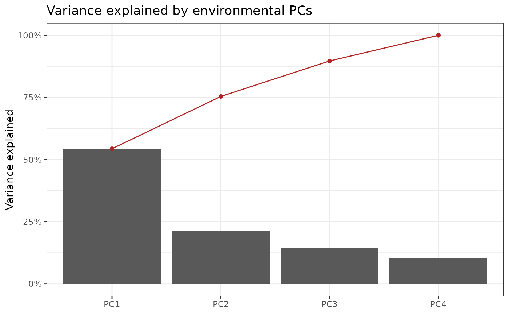
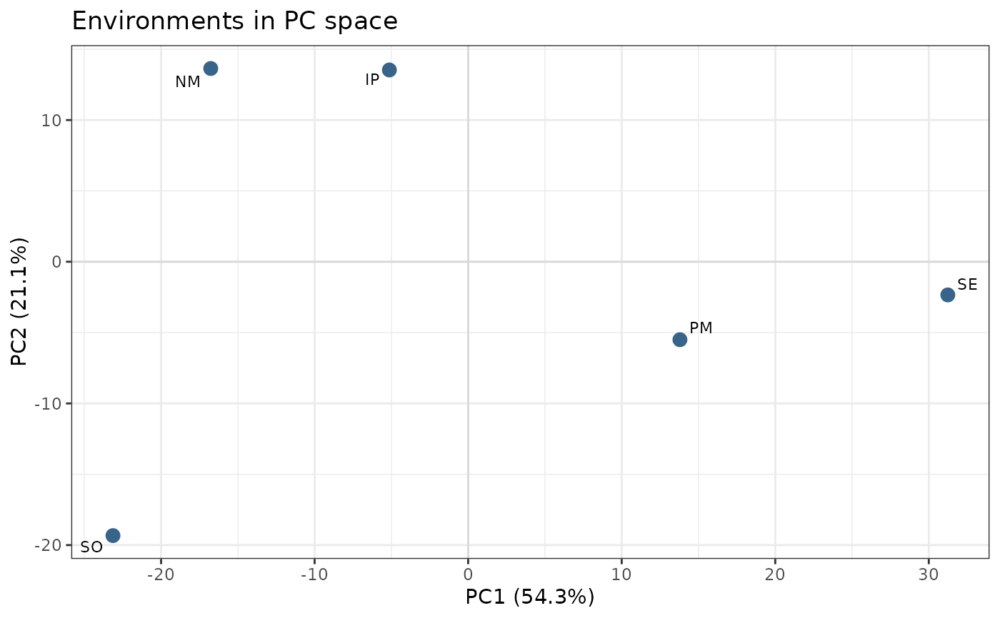

Runs prcomp on the environment x index matrix, as in
Della Coletta et al. (2023), and returns scores, loadings and variance
explained in a form the plotting functions in this module can consume.
Usage
env_pca(
W,
center = TRUE,
scale. = TRUE,
rank. = NULL,
drop.constant = TRUE,
verbose = TRUE
)Arguments
- W
matrix. Environment x index matrix, typically from
env_indices.- center
boolean. Centre the indices. Default
TRUE.- scale.
boolean. Scale the indices to unit variance. Default
TRUE; see Details for why this differs from a bareprcompcall.- rank.
integer or NULL. Maximum number of PCs to compute.
NULL(default) computes all available, which ismin(nrow - 1, ncol).- drop.constant
boolean. If
TRUE(default) indices with zero variance are removed before the PCA rather than producingNaNunder scaling.- verbose
boolean. Print a summary. Default
TRUE.
Value
A list of class "env_pca":
scoresenvironment x PC matrix (
prcomp$x)loadingsindex x PC matrix (
prcomp$rotation)variancedata.frame with
PC,sd,prop,cumprcompthe underlying
prcompobjectdroppedindices removed as constant
metadata.frame mapping each index to its factor, interval and day
Details
Scaling. The paper reports only that prcomp was used. Because the
17 factors are on incomparable scales – radiation in MJ/m2/day, precipitation in mm,
FRUE unitless in [0,1] – an unscaled PCA is dominated by the highest-variance
factor and the leading PCs largely describe that one variable. scale. = TRUE
is therefore the default here. Set scale. = FALSE for a covariance-matrix PCA.
Rank. With \(q\) environments and \(k \gg q\) indices, at most \(q - 1\) PCs carry variance. With the 9 environments of the paper that is 8, so the reported "ninth PC" explaining \(<0.01\%\) is effectively numerical noise. Expect very few informative PCs unless you have many environments.
Examples
# \donttest{
data("maizeWTH")
W <- env_indices(maizeWTH, end.day = 130)
#> ---------------------------------------------------------------
#> env_indices -- builds interval-resolved environmental indices
#> Last updated at 09/27/2026
#> ---------------------------------------------------------------
#> ------------------------------------------------------------
#> env_indices(): 5 environments x 21 factors x 44 intervals = 924 indices
#> interval width : 3 day(s), days 1..130
#> discarded : 106 record(s) outside 1..130
#> ------------------------------------------------------------
pc <- env_pca(W)
#> ---------------------------------------------------------------
#> env_pca -- runs PCA on the environmental index matrix
#> Last updated at 09/27/2026
#> ---------------------------------------------------------------
#> ------------------------------------------------------------
#> env_pca(): 5 environments x 924 indices
#> informative PCs: 4 (= n.env - 1)
#> PC1 54.3%, PC2 21.1%, cumulative 75.4%
#> ------------------------------------------------------------
head(pc$variance)
#> PC sd prop cum
#> 1 PC1 22.40939 0.5434858 0.5434858
#> 2 PC2 13.95208 0.2106715 0.7541572
#> 3 PC3 11.47995 0.1426290 0.8967863
#> 4 PC4 9.76573 0.1032137 1.0000000
env_pca_scree(pc)
#> ---------------------------------------------------------------
#> env_pca_scree -- plots variance explained per PC
#> Last updated at 09/27/2026
#> ---------------------------------------------------------------

env_pca_biplot(pc)
#> ---------------------------------------------------------------
#> env_pca_biplot -- plots environments in PC space
#> Last updated at 09/27/2026
#> ---------------------------------------------------------------

# }